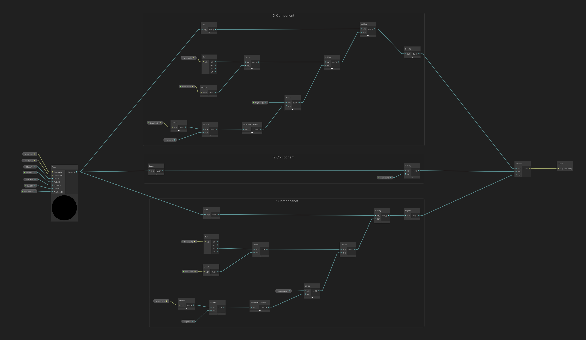
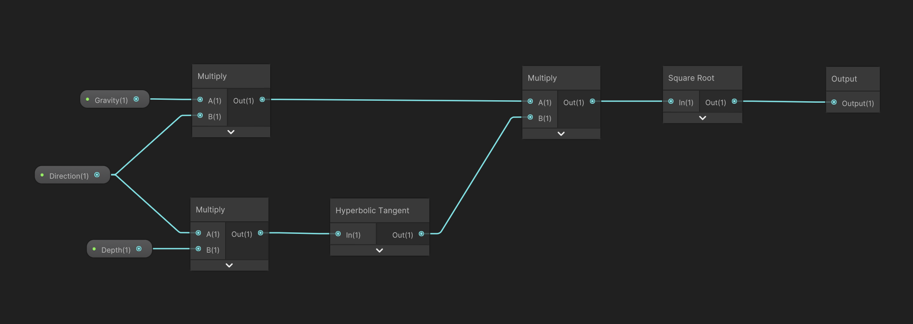

The Lighthouse is a brief retro-horror game, about rowing to a mysterious lighthouse in an old rowboat.
I decided to try the High Definition Render Pipeline in Unity, which gave me access to volumetric lighting and fog.
These effects look great, even when the image is downsampled and dithered, as I was going for a mix of PS1 graphics with modern lighting.
The most challenging element of The Lighthouse was building the ocean shader and buoyancy simulation.
The buoyancy had to match the visual position of the waves, but that vertex displacement takes place on the GPU, while buoyancy is on the CPU.
I started by making an ocean shader in Unity's Shader Graph.
The waves were created by layering Gerstner waves and sampling them over a pre-made plane mesh, which was increasingly detailed nearer the centre.
The first option to obtain the wave height is a GPU readback, but I've heard these are not recommended due to speed limitations.
So, I elected to simply calculate the wave displacement for requested positions on the CPU as well.
This is the Gerstner wave shader...

Gerster Wave Shader Graph
Theta

Frequency
...and the equivalent C#.
Vector3 GerstnerDisplacement(Vector3 pos, Vector3 direction, float amplitude, float phase, float timescale, float offset, float gravity, float depth)
{
float period = offset * timescale;
float theta = Theta(pos, direction, amplitude, phase, period, gravity, depth);
// X
float a = direction.x / direction.magnitude;
float b = amplitude / HyperbolicTangent(direction.magnitude * depth);
float x = -1f * (Mathf.Sin(theta) * a * b);
// Y
float y = Mathf.Cos(theta) * amplitude;
// Z
float j = direction.z / direction.magnitude;
float z = -1f * (Mathf.Sin(theta) * j * b);
return new Vector3(x, y, z);
}
float Theta(Vector3 pos, Vector3 direction, float amplitude, float phase, float offset, float gravity, float depth)
{
float frequency = Frequency(direction.x, gravity, depth);
float a = (direction.x * pos.x) + (direction.z * pos.z);
float b = frequency * offset;
return (a - b) - phase;
}
float Frequency(float length, float gravity, float depth)
{
float a = gravity * length;
float b = HyperbolicTangent(length * depth);
return Mathf.Sqrt(a * b);
}
float HyperbolicTangent(double a)
{
return (float)System.Math.Tanh(a);
}
For each buoyant object, we work out the distance under the wave height every phyisics tick and then apply an upwards force proportional to that distance.
Note that because Gerster waves displace horizontally as well as vertically, the y component of the displacement vector is not perfectly accurate to the provided x and y position.
In my case this was not noticeable in the final product, however you can attain a more accurate result by subtracting the x and z offsets from the original position and then doing the Gerstner computation again.
Somewhere around four itteration of this gives a very accurate aproximation.